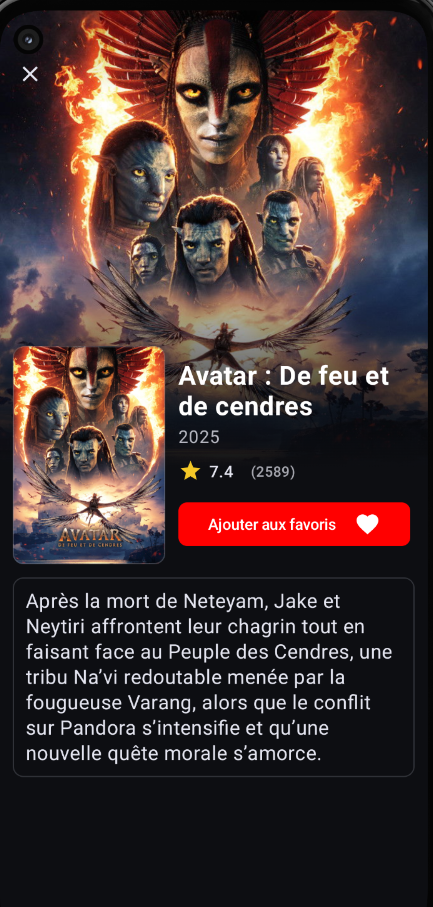
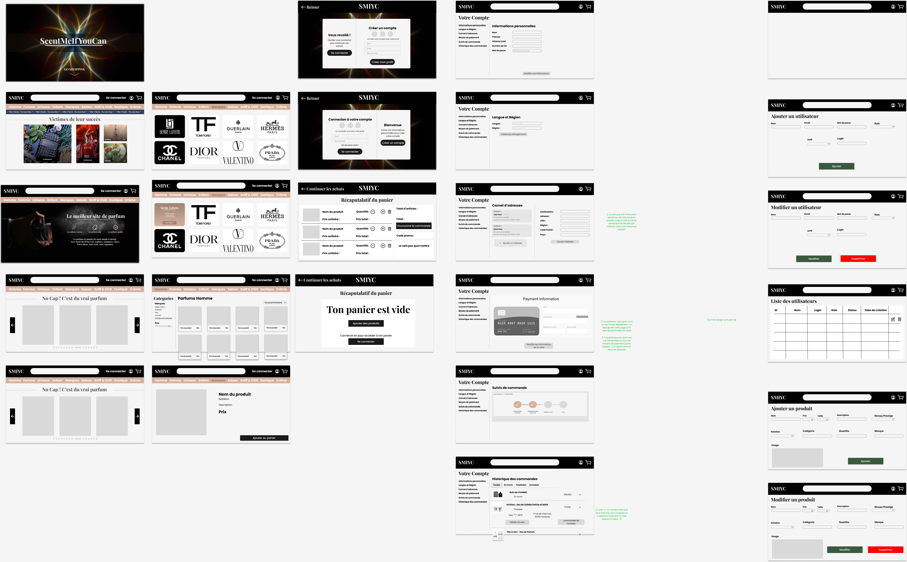

Introduction
Tout au long de mes études, j'ai eu l'opportunité de travailler sur divers projets scolaires
qui
m'ont permis d'appliquer mes connaissances théoriques à des situations pratiques.
Ces projets couvrent un large éventail de sujets, allant du développement d'un site web
vitrine
de
e-commerce à une application mobile de watchlist de films, en passant par la création de
mini-jeu en
2D.
Projets
BananaFlix - Application Mobile de Favoris de Films
Réalisé en Mars 2026
BananaFlix est une application mobile que j'ai développée en collaboration avec 2 des mes
amis
pour permettre aux utilisateurs
d'ajouter des films en favoris. L'application a été réalisée en Kotlin avec Android Studio,
et
utilise l'API de The Movie Database (TMDb)
pour récupérer les données des films.
Les utilisateurs peuvent rechercher des films, consulter
les détails de chaque film, et ajouter leurs favoris à une liste personnalisée.
Au vu du peu de temps que nous avions pour réaliser ce projet, certaines fonctionnalités que
nous aurions aimé implémenter n'ont pas pu être ajoutées, telles que la possibilité de
changer la langue de l'application en anglais ou de changer le thème.
Cependant, nous
avons réussi à créer une application fonctionnelle et conviviale qui répond aux besoins de
base des utilisateurs pour gérer leurs films favoris.

Exemple d'une page d'un film dans l'application
SMIYC - Site Web de E-commerce de Parfums
Réalisé en Décembre 2025
SMIYC (Scent Me If You Can) est un projet de site web de e-commerce que j'ai réalisé dans
une
équipe de 4 personnes. Le site présente une collection de parfums avec des descriptions
détaillées, des images et des options d'achat.
Nous avons utilisé le framework PHP CodeIgniter pour développer le site, et nous avons mis
en
œuvre des fonctionnalités telles que la navigation par catégories, un panier d'achat
interactif
et une page de paiement fictive pour offrir une expérience utilisateur fluide.
Nous avons également utilsé des outils tels que Figma pour la conception de l'interface
utilisateur et GitHub pour la gestion du code source et la collaboration au sein de
l'équipe.

Maquette Figma du site SMIYC
Mini-Jeu en 2D avec Quadtree
Réalisé en Novembre 2025
Ce projet consistait à créer un mini-jeu en 2D utilisant une structure de données appelée
quadtree pour gérer efficacement le stockage des tuiles de la carte. J'ai développé ce
projet en
Golang, et le jeu met en scène des entités mobiles qui interagissent dans un espace
défini.
Parmis les fonctionnalités bonus implémentées, nous avons les suivantes : la téléportation
du
personnage, la génération aléatoire de la carte, ou encore l'impossibilité de traverser les
cases d'eau.
Niveau de test du jeu
Shoe34 - Site Web Vitrine de E-commerce
Réalisé en Octobre 2025
Shoe34 est un projet de site web de e-commerce que j'ai réalisé en utilisant HTML, CSS et
JavaScript. Le site présente une collection de chaussures avec des descriptions détaillées,
des
images et des options d'achat. J'ai mis en œuvre des fonctionnalités telles que la
navigation
par catégories, un panier d'achat interactif et une page de paiement fictive pour offrir une
expérience utilisateur fluide.

Page d'accueil du site Shoe34
Autres Projets
En plus des projets mentionnés ci-dessus, j'ai également travaillé sur d'autres projets scolaires au lycée qui m'ont permis d'apprendre à coder et à comprendre la logique de programmation. Ces projets incluent :
- Un remake du jeu rétro Galaga, réalisé en utilisant Python et Pygame.
- Un outil de recherche de salles de spectacle à Nantes Métropole, grâce à un programme en Python utilisant des données ouvertes en CSV.
Démonstration du jeu Galaga

Résultat de l'outil de recherche de salles